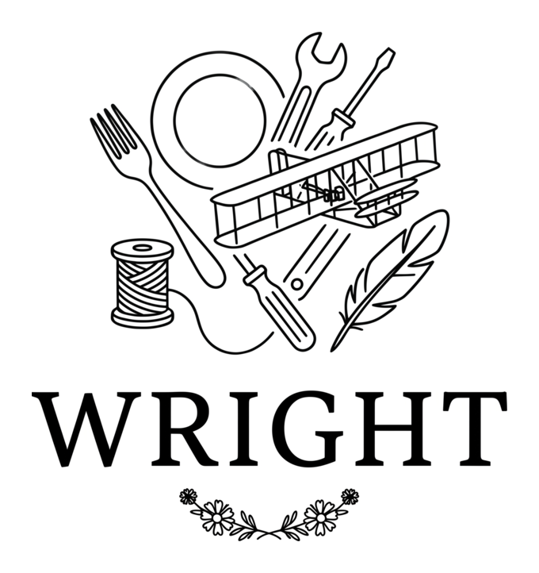

Meet Wright, the Open-Source Engine Behind Our Bakery

SaveThe Engine Behind the Grocery List
A couple weeks ago I wrote about how we automate our market day grocery lists. That system runs on something I built called wright, a Python library for production planning, recipe costing, and shopping list aggregation. It is the engine that does all the math behind scaling recipes, consolidating ingredients, calculating costs, and detecting allergens. We just released it as open source.
What It Is
Wright is a bill-of-materials library. That means it handles the same kind of planning whether you are baking cakes, building a deck, or brewing beer. You define your assemblies (or recipes) with their components and materials (or ingredients), and wright handles the rest. That includes costing from purchase data, grouping shopping lists by store aisle, converting between units, detecting allergens and dietary properties, analyzing nutrition, and tracking supply levels.
You give it your recipes and your price data, and it does the rest. It is also MIT licensed, so you can adapt it however you need for whatever kind of production planning you are doing.
from decimal import Decimal
from wright import (
Recipe,
Ingredient,
RecipeComponent,
Purchase,
calculate_recipe_cost,
)
# A simplified version of one of our recipes
lemon_cake = Recipe(
name="Lemon Cake",
components=[
RecipeComponent(
name="Batter",
ingredients=[
Ingredient(name="Gluten-Free Flour", quantity=300, unit="g"),
Ingredient(name="Dairy-Free Butter", quantity=200, unit="g"),
# ... additional ingredients omitted
],
)
],
servings=12,
)
cost = calculate_recipe_cost(
lemon_cake,
[
Purchase(name="Gluten-Free Flour", quantity=2, unit="lb", price=Decimal("3.99")),
Purchase(name="Dairy-Free Butter", quantity=8, unit="oz", price=Decimal("2.49")),
],
)
That returns a RecipeCost with a breakdown per ingredient and a total cost range. Behind the scenes, wright matches each ingredient name to the purchase data, converts units (300 grams of flour from a 2 pound bag, 200 grams of butter from an 8 ounce package), calculates the right cost, and sums it all up. This is a partial example with only two ingredients, so the total is just for the flour and butter shown here, not the full cake. The library is designed to be flexible enough that you can customize it for whatever kind of production you do, and the same pattern scales to a full production run with multiple recipes, store-aisle grouping, stock deduction, and allergen detection.
Why We Released It
I have spent years in the open-source ecosystem, mostly on marketing and community for the PyMC project and other libraries in that ecosystem. A lot of what I do ends up public on GitHub. The thing I have always liked most about open source is the collaboration. It reminds me of starting the bakery here in Asheville. The community has been so welcoming, and other market vendors have been incredibly helpful and collaborative. Open-source tools power our bakery too, and we run on Python, Pydantic, and Linux on Razi, standing on the shoulders of everything people have built and shared freely. Wright is one small piece of how I try to contribute back, but it is far from the only one. Being based in North Carolina, I like that this library comes from a place where people build things that help others move forward. If you do any kind of production planning, it is all there on GitHub.
Back to the Bakery
Wright runs the math behind every market day. It is how we know what to buy, what to charge, and what to tell customers who ask about allergens. The cakes that library helps cost and plan end up on our table at the market. If you want to taste what it all adds up to, find us at a market or reach out directly.